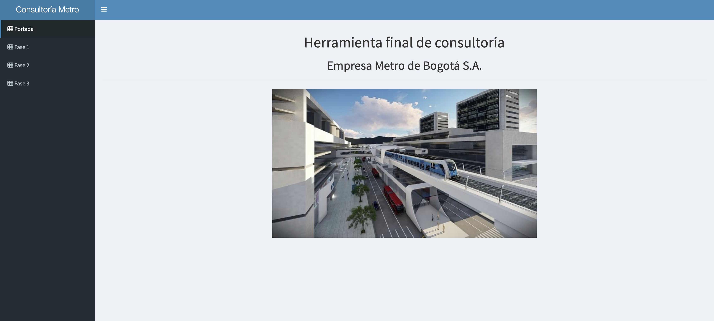
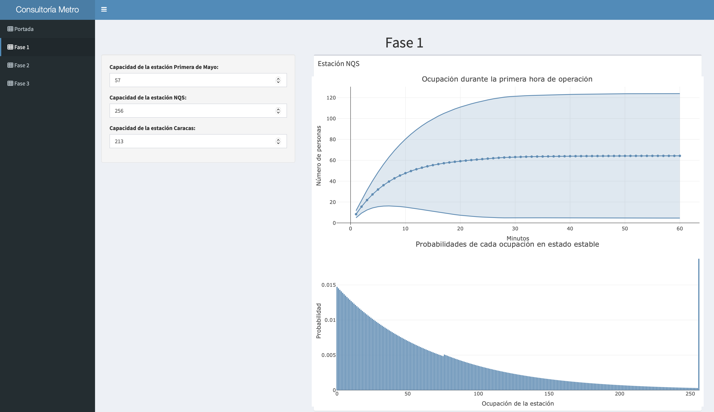
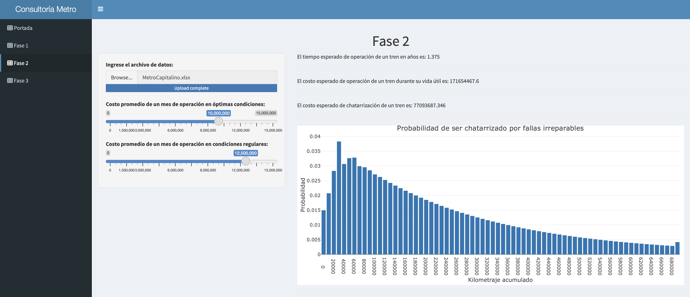
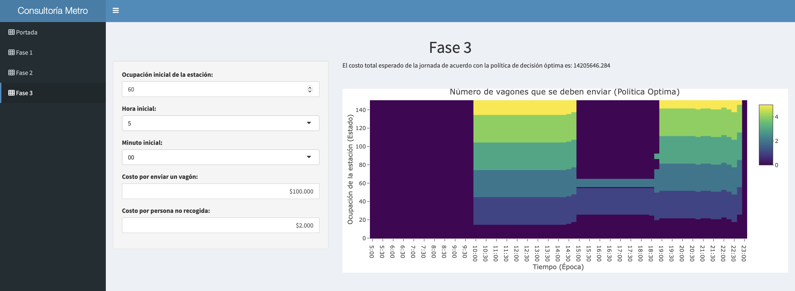

Stochastic Models Project
Metro Bogotá
A Shiny dashboard that models station occupancy, train lifecycle states, and wagon-dispatch decisions using Markov chains and stochastic dynamic programming.
What it does
- Fase 1: Continuous-time Markov chain occupancy analysis for three stations.
- Fase 2: Discrete-time Markov chain lifecycle/cost analysis from uploaded
.xlsxdata. - Fase 3: Stochastic dynamic programming policy for wagon dispatch with cost minimization.
Main dashboard view

Detailed phase analysis

Interactive visualizations

Model results and metrics

Tech stack
R
Shiny
shinydashboard
plotly
markovchain
readxl
Docker
Getting started
Docker
docker build -t metro-r-image .
docker run --rm -p 3838:3838 metro-r-imageLocal R execution
cd src
R -f app.RProject structure
src/
app.R
Fase_1.R
Fase_2.R
Fase_3.R
www/image.jpeg
assets/
MetroCapitalino.xlsx
Dockerfile
LICENSELicense
MIT License.